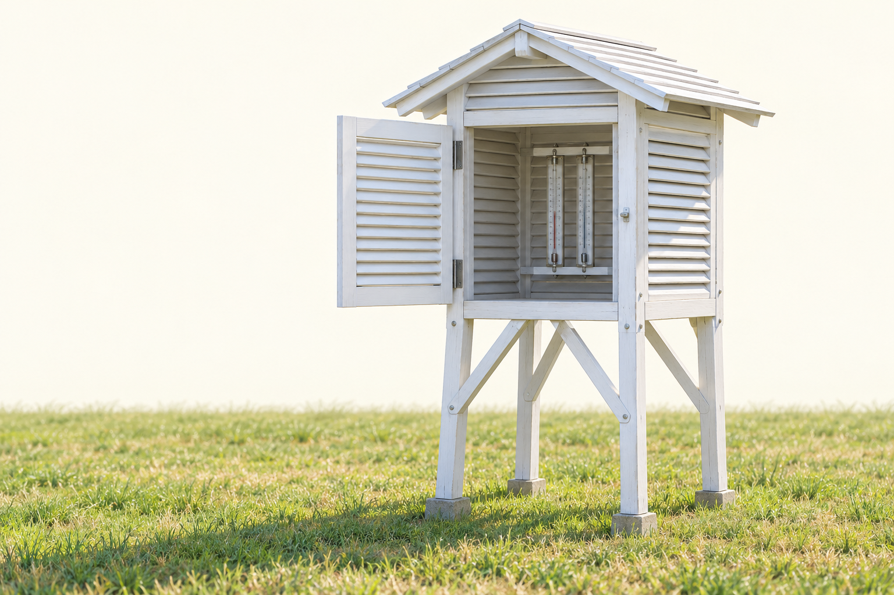
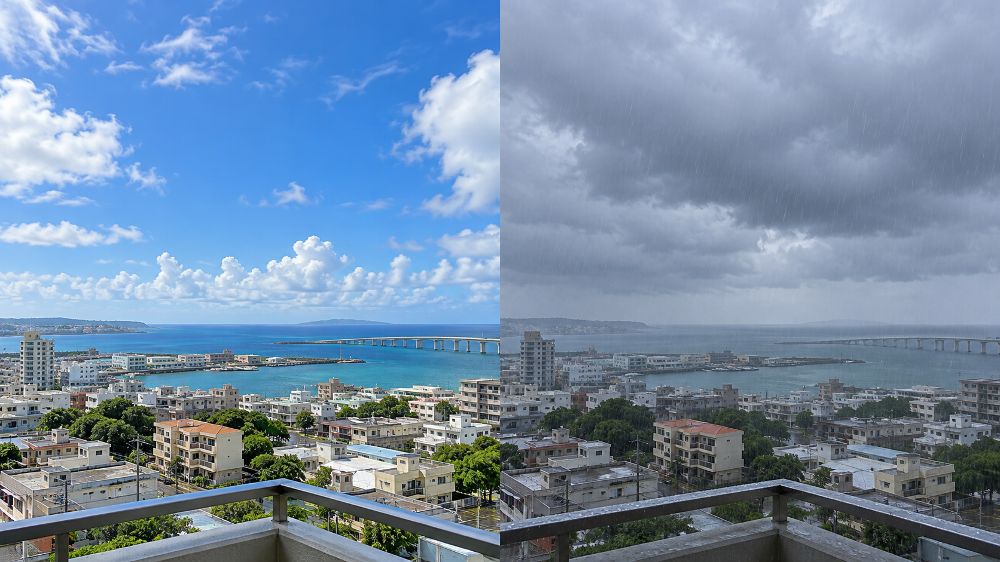
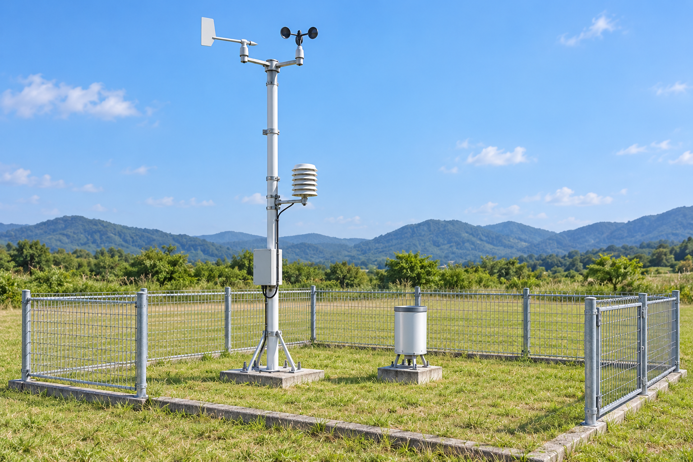
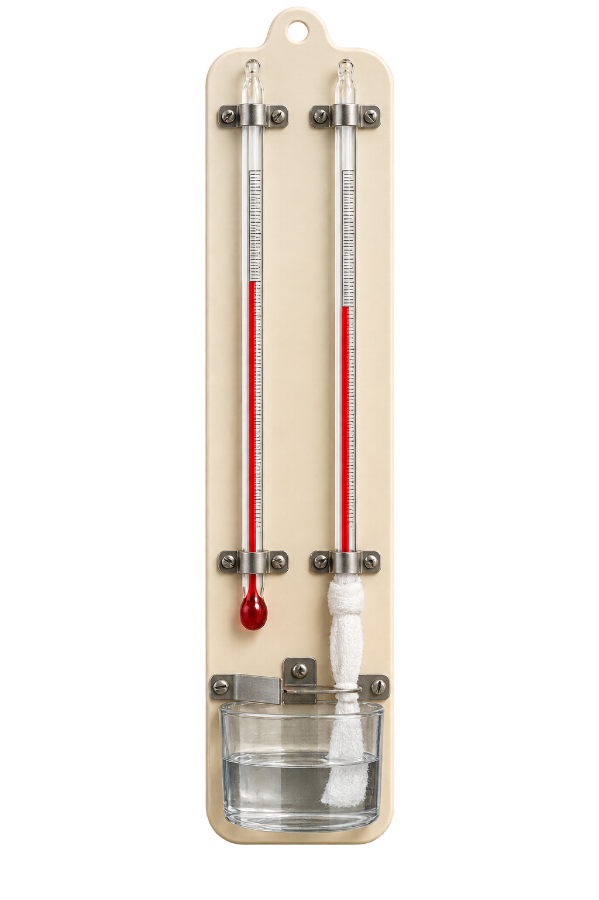

中2 理科・地学
気象観測

快晴・晴れ・曇り。何で決まる？
空のどこを見ると、区別できそう？

雲がほとんどない。これは？
快晴・晴れ・曇りから選ぼう。
空の半分に雲。これは？
快晴・晴れ・曇りから選ぼう。
8割が雲でも、晴れ？
快晴・晴れ・曇りから選ぼう。
天気の境目は、ここ
空全体を10として、雲の量を数える。
雲がほとんどない
半分以上でもこの範囲
ほぼ雲におおわれる
自分で判定 1
この空の天気を、理由と一緒に答えよう。
自分で判定 2
この空の天気を、理由と一緒に答えよう。
自分で判定 3
この空の天気を、理由と一緒に答えよう。
空と空気の状態を、調べよう
天気以外には、何を調べられる？
この記号は、どんな天気？
声に出して答えてから、めくろう。
この記号は、どんな天気？
声に出して答えてから、めくろう。
この記号は、どんな天気？
声に出して答えてから、めくろう。
この記号は、どんな天気？
声に出して答えてから、めくろう。
この記号は、どんな天気？
声に出して答えてから、めくろう。
もう一度。今度は順番を変えて
声に出して答えてから、めくろう。
もう一度。今度は順番を変えて
声に出して答えてから、めくろう。
もう一度。今度は順番を変えて
声に出して答えてから、めくろう。
もう一度。今度は順番を変えて
声に出して答えてから、めくろう。
もう一度。今度は順番を変えて
声に出して答えてから、めくろう。
覚えること｜雲量と天気
まず、自分の言葉で答えよう。
空気の状態は、どう測る？
測る場所・器具の形には、理由がある。
気温って、どこの温度？
温度計を日に当てたら、何が温まる？
なぜ、地上約1.5m？
地面に近すぎると、何の影響を受ける？
百葉箱は、なぜ白い？
黒い箱と比べて考えよう。
なぜ、隙間がある？
閉じ切った箱では、空気は入れ替わる？
扉は、なぜ北向き？
扉を開けたとき、温度計に何が当たると困る？
百葉箱の理由、言える？
高さ・白色・よろい戸を、それぞれ説明しよう。
各地で、自動的に観測する
たくさんの地点の気象を、どう集める？

湿度50％って、どんな状態？
同じ気温で、飽和するときを100％とすると？
2本の温度計、何が違う？
球部と、その周りを見比べよう。

乾球
ぬれていない
湿球
ぬれたガーゼ
湿球の方が低い。なぜ？
ぬれたガーゼの水は、少しずつどうなる？
乾球
ぬれていない
湿球
ぬれたガーゼ
乾球・湿球の目盛りを読む
それぞれ何℃？ 目の位置を目盛りに合わせよう。
一緒に、湿度を求めよう
乾球20℃、湿球18℃。どこを読めばよい？
| 乾球＼差 | 0℃ | 1℃ | 2℃ | 3℃ | 4℃ |
|---|---|---|---|---|---|
| 20℃ | 100 | 91 | 81 | 73 | 64 |
| 19℃ | 100 | 90 | 81 | 72 | 63 |
| 18℃ | 100 | 90 | 80 | 71 | 62 |
| 17℃ | 100 | 90 | 80 | 70 | 61 |
今度は、自分で目盛りを読む
乾球と湿球を読んで、温度差も求めよう。
自分で、湿度を求めよう
乾球18℃、湿球15℃。湿度は何％？
| 乾球＼差 | 0℃ | 1℃ | 2℃ | 3℃ | 4℃ |
|---|---|---|---|---|---|
| 20℃ | 100 | 91 | 81 | 73 | 64 |
| 19℃ | 100 | 90 | 81 | 72 | 63 |
| 18℃ | 100 | 90 | 80 | 71 | 62 |
| 17℃ | 100 | 90 | 80 | 70 | 61 |
北風は、北へ吹く？ 北から吹く？
空気の動きを見て、答えよう。
方角を細かくすると？
北と北東の間は、何と呼ぶ？
風の強さは、どう表す？
木や旗の動きも、風の強さの手がかり。
一つの記号に、3つの情報
丸・棒・矢羽根を順に読もう。
記号の練習 1
天気・風向・風力の3つを答えよう。
記号の練習 2
天気・風向・風力の3つを答えよう。
記号の練習 3
天気・風向・風力の3つを答えよう。
吸盤は、なぜくっつく？
接着剤は使っていない。何が押している？
空気も、物を押している
上からだけ？ 横や下からは？
覚えること｜観測
まず、自分の言葉で答えよう。